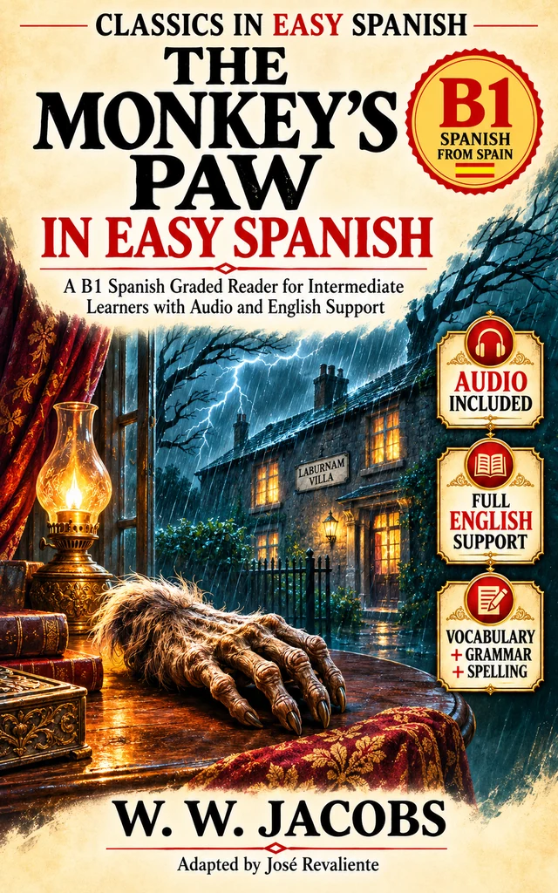

Vocabulary CSV
72 contextual entries extracted from the book’s glossary.
Download →
Classics in Easy Spanish · Reader Companion
One classic horror short story in graded Spanish. Explore the three-part narrative while preserving its mystery, domestic tension and open questions.
Follow the story in the book; listen to the Spanish narration and use these optional resources afterwards. The book also contains the full English support translation.
W. W. Jacobs
Adapted by José Revaliente
Listen in story order. The three MP3 links are supplied by the publisher and hosted at Internet Archive, not duplicated on GitHub.
Open the complete archive collection ↗
External audio availability depends on Internet Archive. Use a direct MP3 link if the player fails; live playback has not been independently verified in this session.
Download vocabulary and Anki cards at any time. The timeline and character map reveal plot details: finish the relevant part first.
72 contextual entries extracted from the book’s glossary.
Download →Spanish front, English contextual back, tagged by part.
Download →Practise the 72 Spanish terms directly in your browser, filtered by story part.
Study cards →Choices, consequences and ambiguity · SPOILERS.
Open →Character motivations and evidence · SPOILERS.
Open →Practice activities before, during and after reading.
Open →US Letter worksheet PDF (manual upload if missing).
Download →Anki import: choose UTF-8, tab-separated; Basic note type; map Front, Back and Tags. The TSV includes Anki file-header directives.
Read one of the three parts in Spanish. Use the book’s glossary only when needed.
Play the corresponding audio, paying attention to tense and dialogue.
Use cards or written exercises. After reading, explore motivations and the unresolved mystery.